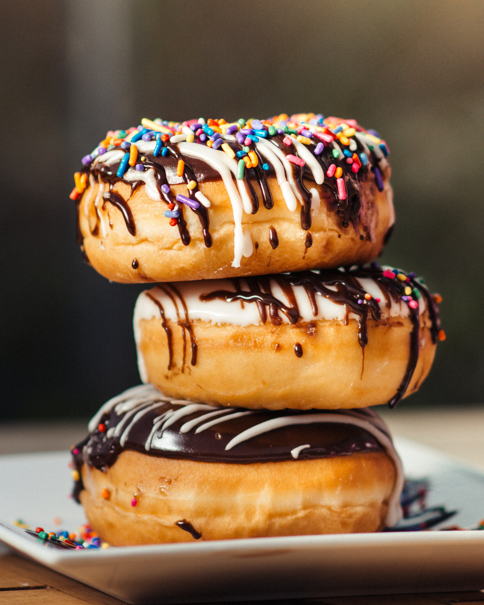
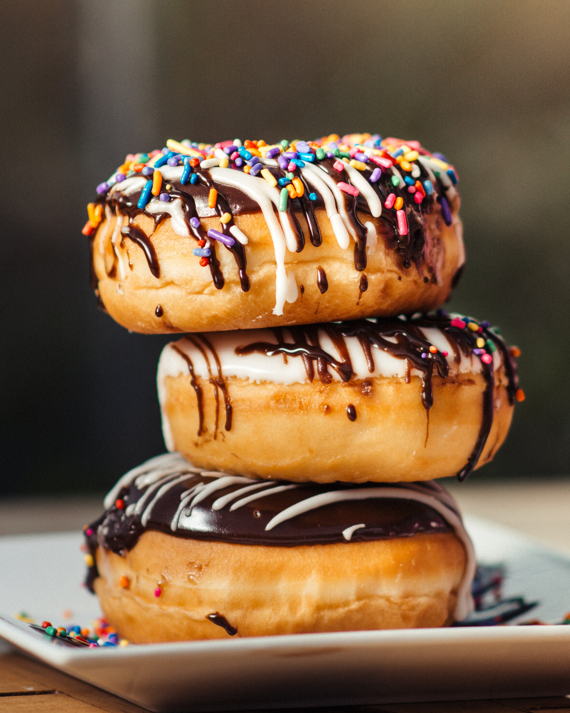

Brummie Cakes
Cake is often served as a celebratory dish on ceremonial occasions, such as weddings, anniversaries, and birthdays. There are countless cake recipes; some are bread-like, some are rich and elaborate, and many are centuries old. Cake making is no longer a complicated procedure; while at one time considerable labor went into cake making (particularly the whisking of egg foams), baking equipment and directions have been simplified so that even the most amateur of cooks may bake a cake.


 
